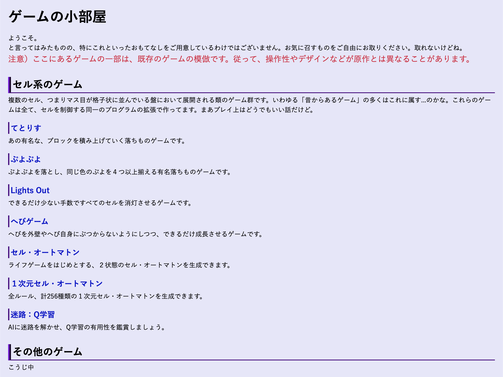

時期違いな書き初め、というか意味自体違う。
時期違いな書き初め、というか意味自体違う。
2021/09/22
はじめまして
はじめまして、とは言っても私自身の詳しいことについては今後制作予定の「作者のページ（仮）」で書くと思います。はい、思います。保証はしません。思うだけです。
ここでは、本サイトを作るにあたっての経緯などをお話ししようと思います。はい、思いま（以下略）
本サイト制作の経緯
そもそものきっかけ
まず、どうしてHTMLを始めたかというお話から始めましょう。そもそものきっかけはJavaScriptを始めたことに由来します。じゃあどうしてJavascriptを始めたのかというと、他の選択肢が限られていたってのが正しいですかね。というのも、学校で買わされたパソコンがChromebookだったんです。あのパソコンって、あくまでネット上のサービスを使うことを前提に作られているので、コンピュータそのものの内部で何かしらのアプリケーションを動かすなんてことは想定されていないし、普通の方法では動かせない。ということは、「パソコンを制御する」プログラミングとはまあ相性が悪いわけですね。もちろんオンラインでプログラミングできるサービスもあるわけですが、あんまり使いたくない。しかし、あくまで例のパソコン、「Google Chromeは利用できる」んです。じゃあChromeを実行環境にできるJavaScriptならオフラインでもプログラミングできるんじゃないかって考えたわけです。今考えると自分のことながら頭いいなって思いますね。
さて、じゃあJavaScriptを始めよう、そう思ったときに、「JavaScriptはHTMLの中で実行するよ」っていうことを知って、じゃあHTMLも学ばなきゃいけないじゃん。めんどくさい。でも背に腹は変えられない。ということでHTMLの勉強を始めたわけです。まあつまりは「副産物」というか、別にHTMLを始めたかったから始めたというわけではなかったんですよ。
本サイトができる前のお話
さて、そういうわけでJavaScriptを使ったプログラミングを始めたわけですが、とりあえず色々とゲームを作りました。一番最初に作ったのは、確かテトリスだったんじゃなかったかな。。まあいずれにしても、数種類のゲームを作ったわけです。そうすると、それぞれのゲームに接続できるポータルというか、メインページというか、まあそんなものが欲しくなりました。欲しいなら作ればいいじゃないか、ということで作った、これが今は「遊戲の小部屋」と名付けられているページの始まりです。まあ当時は今の見た目とは全く違ったんですけどね。ということで画像を載せておきましょう。  今とはだいぶ違いますよね。タイトル自体も「ゲームの小部屋」になってますし、色づかいや配置も今とは全然違う。それでも例えばタイトル枠なんかは今のデザインの端くれのようなものを感じられるのではないでしょうか。そして、実は今見たこの画像、これが今のサイトへの大規模なデザイン変更をする直前のものです。つまり、デザイン変更するまでは今の「遊戲の小部屋」しかなかったんです。もっともこの頃からすでにもっとサイトを拡張したいという考えはあったのですが。
大規模なデザイン変更
デザイン変更については、以前から考えている節がありました。それでも面倒だったので先延ばし先延ばししていたわけで。ところが学校でHTMLに触れることになったので、この際今まで作ってきたものをリニューアルしてしまおうという気になったらしいですこの人。
ところでデザインを司るのはCSSというプログラミング言語のようなもの。厳密にはプログラミング言語じゃないんですが。まあそんなことはさておき、基本的にデザインはCSSをいじることでかなり大胆に変更できる。ところが、CSSはあくまで壁紙や観葉植物のようなインテリア。部屋そのものはHTMLが管轄しているわけです。今回のデザイン変更は今までとあまりにもかけ離れていたため、この今は亡き「ゲームの小部屋」を今ある「遊戲の小部屋」に変更するときにはHTMLそのもの、つまり部屋自体もかなり変更せざるを得ませんでした。それくらいこのデザイン変更は大規模だったということです。
どうしても個人的に白背景が苦手なので（なんか目に刺激が強いし、あと有機ELモニタの場合長時間表示すると焼き付いてしまう）、背景は黒地。当然文字は白系に決定。アクセントは水色にするというところまで決め、デザインの大枠を確定しました。その後ヘッダー、フッター、サイドメニュー（？）まで作り、これで現在の本サイトのデザインがおよそ出来上がったわけです。
サイトの大拡張
さて、今までの話はまだ「遊戲の小部屋」だけについて。しかしせっかくデザインを変更したのだから、サイトの拡張をしようではないかということで、「珪華霧散」と大きく書かれているトップページと、実質的なトップページにあたる「交叉点」を作りました。さらにそこに「遊戲の小部屋」と同じ階層のサブページをいくつか作ることにして、そしてその中のひとつがこのブログをまとめている「雜錄の書庫」だというわけです。
サイトを作るにあたって意識した細かな意匠みたいなお話
ここまででサイトを作った経緯をおおまかに話したので、ここからはちょっとした気遣い（？）のようなお話をしましょうか。はい、お察しの通り、ネタ切れです。
サブページごとに割り振られている球体について
サイトをある程度大きくしようと考えたとき、当然のことながらさまざまな内容のものがごちゃ混ぜになるわけです。もっともリンクごとに整理はされているのですが、でもそれはシステムの話。人間目線で考えたとき、このページがどこに対応しているのかがわかりやすいように、シンボルをつけようと考えました。というわけでそれぞれのページのタイトルにシンボルとしての球体が配置されています。
ちなみに、それぞれのページのタイトル左側に球体が配置されていると思いますが、実はこの位置を定めるのが結構大変でした。普通に文字列の中に埋め込むだけだと、どうしても下側にズレたように見えてしまうんです。これは割と簡単な理由で、日本語フォント自体が上に寄っていることに因ります。日本語文字列で中心線だと思っている高さは、実は本当の中心線の高さよりも高いんですね。ということで、この球体は文字列よりも少し上の位置に配置することで、見かけ上ピッタリ中心線が合っているかのようにしています。
ブログページの配色について
トップページからこのページまでたどってきた方なら、このブログページでは背景や見出しのデザインが変わっていることにお気づきになったのではないでしょうか。これもちゃんと意図してやっていることです。まず背景についてですが、真っ黒ではなく濃い灰色を使っています。これは、文字主体のページであることから生じる配慮です。試しに「交叉点」なんかを見てみてください。あ、ちゃんと戻ってきてくださいね〜（戻ってきてもらわないと困るので、あえてダイレクトリンクは貼らない）。
あちらのページは文字数がさほど多くない。そこでデザイン性を重視して黒地にそのまま白い字を重ねています。しかしどうでしょう、いささか目への負担が大きく感じるのではないでしょうか。この負担、背景と文字のコントラストが大きすぎることから生じているはずです。「交叉点」は文字数が少ないのでまだしも、このページのような文字主体のページで真っ黒な背景を使うと、あまりにも目への負担が大きい。そういうわけで、コントラストを下げるべく背景を若干明るくしています。
また、見出しについてはこれはデザイン上の問題です。通常の見出しデザインをここで使うとあまりにも場違いな感じが出てしまう。というのも、この文字が載っている部分、左右にゆとりを設けてありますよね。背景が真っ黒なままの部分のことです。これを作った都合上、今までの枠付きデザインだと妙に浮いてしまって居心地が悪く見える。ということで、ここの見出しはもっと質素なものにしています。
文字について
文字についても場所によっては相当気にかけています。それが「複数の項目が並立する説明欄」、例えば「交叉点」の「旅路・行き先」だとか「遊戲の小部屋」のそれぞれのゲームへ繋がるボタンだとか。何気なく見ているとなんとも感じないでしょうが、よく考えてみるとみんなほぼ同じ文字数になっています。もちろん自然発生的にこうなるわけないので、ここは本当に頭を使っています。できるだけ不自然にならない日本語で、なおかつほぼ同じ文字数に揃えるわけですからね。ね、すごいでしょ、すごいでしょ、、、、